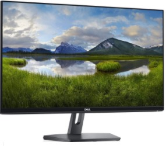
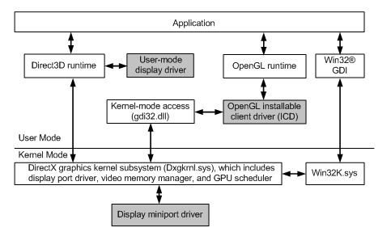
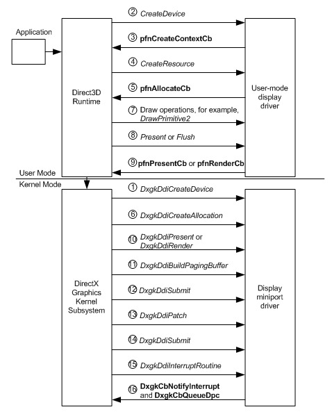
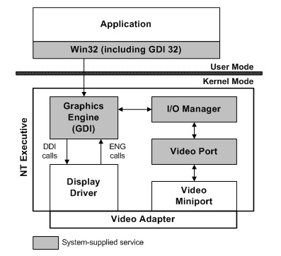
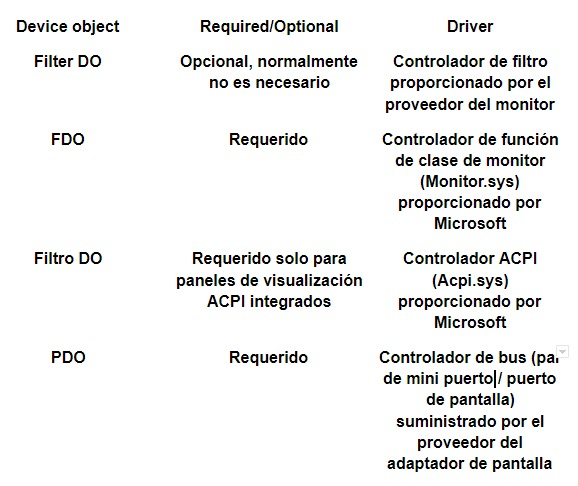
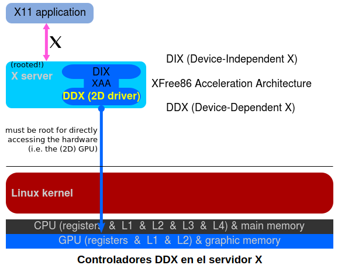
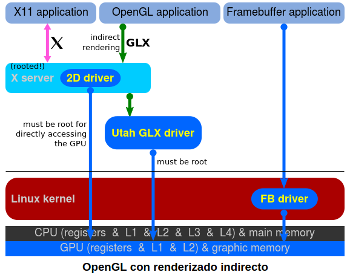
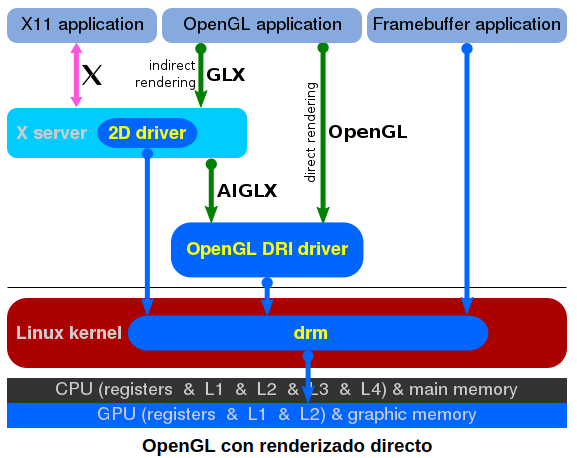
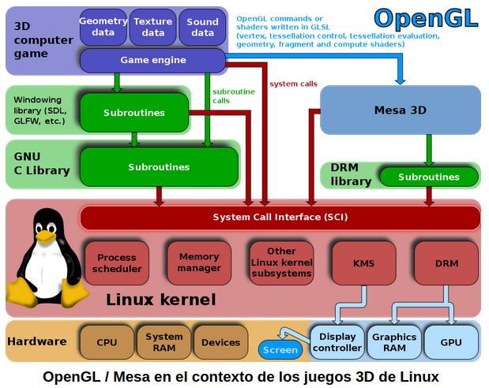

A través del siguiente trabajo buscaremos explicar el funcionamiento de un monitor, centrándonos en el proceso que realiza dicho dispositivo para interpretar y utilizar la información que le brindamos. Para lograr llegar a un mejor entendimiento comenzaremos brindando una explicación de los componentes, los tipos y los parámetros de un monitor, como de las placas de video conceptos a los cuales haremos referencia a lo largo del trabajo. Una vez tengamos una mirada general profundizaremos en los drivers, que son el principal traductor de cualquier hardware que poseemos actualmente, analizaremos su estructura y que tipo de formato de datos recibe y arroja. En esta parte de la investigación nuestros dos ejes serán la arquitectura del modelo de controlador de pantalla de Windows, su evolución y ventajas respecto a arquitecturas anteriores, y la pila de gráficos de Linux, con un desarrollo temático similar, con esto tendremos una exposición de controladores desde dos sistemas operativos diferentes.
El monitor de computadora (en Hispanoamérica) o monitor de ordenador o pantalla (en España) es el principal dispositivo de salida (interfaz), que muestra datos o información al usuario.
También puede considerarse un periférico de entrada/salida si el monitor tiene pantalla táctil o multitáctil.
La tarjeta gráfica o tarjeta de vídeo de un componente que viene integrado en la placa base del PC o se instala a parte para ampliar sus capacidades. Concretamente, esta tarjeta está dedicada al procesamiento de datos relacionados con el vídeo y las imágenes que se están reproduciendo en el ordenador.
Todas las imágenes que ves en el monitor de tu ordenador, desde los gráficos de un videojuego hasta lo que escribes en Word, requieren ser procesadas por el ordenador. Las tarjetas gráficas obtienen esos datos que le envía el procesador del ordenador, y los transforma en información visual, lo que quiere decir que coge datos que son unos y ceros y los convierte en imágenes.
El corazón de la tarjeta gráfica es la GPU o Unidad de procesamiento gráfico, un circuito muy complejo que integra varios miles de millones de transistores diminutos y varios núcleos que tienen capacidad de procesamiento independiente. De la cantidad y capacidad de estos núcleos dependerá la potencia, un aspecto que es importante debido al esfuerzo de cálculo tan grande necesario para generar los gráficos que ves en el ordenador.
Así como los procesadores centrales de los ordenadores, las CPU, están diseñados con pocos núcleos pero altas frecuencias de reloj, las GPU tienden al concepto opuesto, contando con grandes cantidades de núcleos con frecuencias de reloj relativamente bajas. La mayoría de los núcleos se dirigen al procesamiento de vértices y de píxeles.
Luego tienes la memoria gráfica de acceso aleatorio o GRAM, que son chips de memoria que almacenan y transportan información entre sí. Esta memoria no es algo que vaya a determinar de forma importante el rendimiento máximo de una tarjeta gráfica, aunque si no es suficiente puede acabar lastrando y limitando la potencia de la CPU.
Y luego tienes el convertidor digital-analógico de memoria de acceso aleatorio, también conocido como RAMDAC. En este caso, es un conversor de señal digital a señal analógica, y se encarga de recibir las señales digitales que genera la tarjeta gráfica y convertirlas en un tipo de señal que puede interpretar el monitor al que está conectado el ordenador. Dependiendo de su capacidad, se podrá convertir la señal para adaptarla a diferentes velocidades de refresco.
En cuanto al funcionamiento, si lo simplificamos podríamos hablar de dos funciones principales. Primero se realiza el procesamiento de vértices, que obtiene la información de vértices calculada por la CPU y procesa su ordenamiento espacial, su rotación, y qué segmentos de estos serán visibles gráficamente.
Y a continuación, se pasa al procesamiento de los píxeles, que es como poner una capa de pintura y procesar lo que realmente vas a ver en el monitor. Es aquí donde la potencia de la gráfica es más importante, ya que es el proceso más complejo y pesado, y donde se aplican las capas de gráficos necesarias y los efectos que se necesiten para crear las texturas complejas y gráficos realistas que luego debes ver en pantalla.
Una vez hecho esto, la tarjeta gráfica envía la información al monitor. Para esto se pueden utilizar diferentes tipos de salidas, como las VGA, DVI, HDMI, DisplayPort o USB-C. Cada una tiene unas características y tendrás que buscar la mejor de ellas que esté presente tanto en la gráfica que tienes en la CPU como en el monitor, conectándolas directamente.
Los drivers o controladores son el software que se instala en el equipo con el objetivo de que se ejecute como un intermediario entre el sistema operativo y el hardware. Los drivers/controladores son elementos imprescindibles para que el sistema operativo pueda reconocer de forma correcta los componentes que se agregan al computador.
Los drivers se componen de líneas de código con funciones específicas dirigidas a componentes particulares. En este sentido, estos programas se encargan de llevar un mensaje al sistema para que éste efectúe su tarea de reconocimiento y se comunique con el dispositivo.
Algunas veces el sistema operativo deja de responder, emite un mensaje sobre una pantalla azul o algún programa deja de ejecutarse. Esto puede ocurrir por múltiples factores y uno de ellos está relacionado con problemas de drivers o controladores.
A continuación, te mostraremos toda la información que necesitas saber acerca de los drivers, su utilidad y funcionalidad. Así, prestarás mayor atención a estos elementos tan necesarios en tu sistema operativo.
Los drivers o controladores sirven para establecer una comunicación entre el sistema operativo y los demás componentes del equipo. Por ende, se pueden reconocer los dispositivos que se han conectado al computador y así hacer uso de ellos de manera óptima.
Es importante destacar que si no instalamos el driver de un dispositivo que lo requiere, entonces el equipo presentará fallas de velocidad, un mal rendimiento, la suspensión de programas, el congelamiento de la pantalla, entre otros conflictos.
Cuando se agrega un componente a nuestro computador, el driver debe actuar como un puente para que el hardware pueda emitir una serie de instrucciones al software. Si el el sistema operativo reconoce el componente y podemos usarlo, entonces hemos instalado el controlador apropiado.
Los drivers han sido creados para componentes y sistemas específicos. Por eso debes tener mucho cuidado durante la búsqueda del controlador apropiado que garantice el funcionamiento correcto del hardware. Si instalamos un driver incompatible, entonces éste no enviará las instrucciones correspondientes con el dispositivo que queremos incorporar.
Tenga muy en cuenta, que además de los Drivers y controladores será necesario instalar otro tipo de software. Claro es el ejemplo al instalar DirectX a la última versión, software imprescindible para el correcto funcionamiento en juegos y otras aplicaciones.
Los controladores son muy diversos, por esta razón se catalogan según su naturaleza, lea con atención la siguiente información para conocer las clasificaciones de los drivers presentes en su ordenador y otros dispositivos:
Algunos sistemas operativos cuentan con los llamados drivers genéricos para que ciertos componentes funcionen inmediatamente al ser conectados. Los drivers universales se forman con líneas de código que permiten que el sistema identifique automáticamente periféricos tales como el teclado y el mouse.
Aún así, si bien muchos drivers se instalan de esta manera, siempre será necesario descargar los drivers faltantes en tu PC, para que el equipo funcione de la mejor manera posible.
Ciertos componentes como las tarjetas de video, algunas cámaras web, redes WiFi e impresoras necesitan un software específico para solucionar problemas de compatibilidad. Por esta razón es importante conocer las especificaciones del dispositivo con el fin de instalar el controlador adecuado.
Este es el ejemplo al actualizar los controladores de la tarjeta gráfica o de cualquier otro componente de esas características, que requieren un driver único para funcionar de manera correcta.
Windows automáticamente detectará su monitor y utilizará un controlador plug-and-play (PnP) (enchufar y usar) para proporcionar las resoluciones compatibles en la mayoría de los casos. Generalmente los monitores plug-and-play no necesitan un controlador de monitor independiente.
Para monitores Acer que tienen características que no son compatibles con el controlador PnP de Windows, puede descargar el controlador de nuestra sección de Controladores y manuales. Estos paquetes de controladores incluyen los siguientes tipos de archivos:
Acer solamente recomienda descargar e instalar un controlador de monitor si el controlador plug-and-play no brinda soporte para la resolución nativa o la frecuencia de actualización de su monitor o si está presentando problemas con la calidad de color.
Un controlador de monitor proporciona información de configuración en forma de un archivo INF. El sistema operativo utiliza el archivo para implementar las funciones de plug and Play (PnP) del monitor. Esta información de configuración incluye tasas de actualización soportadas, resolución de pantalla y ajustes de calidad de color. El archivo de configuración también se conoce como archivo INF del monitor.
La arquitectura del modelo de controlador de pantalla de Windows (WDDM), disponible a partir de Windows Vista, se compone por el modo de usuario y modo de kernel o núcleo. La siguiente figura muestra la arquitectura necesaria para admitir WDDM.
Un proveedor de hardware gráfico debe proporcionar el controlador de pantalla en modo de usuario y el controlador de minipuerto de pantalla. El controlador de pantalla en modo de usuario es una biblioteca de vínculos dinámicos (DLL) cargada por Microsoft Direct3D en tiempo de ejecución. El controlador del minipuerto de pantalla se comunica con el subsistema del kernel de gráficos Microsoft DirectX.
La creación de controladores de pantalla es más fácil con el modelo de controlador de pantalla de Windows (WDDM), disponible a partir de Windows Vista, en lugar de usar el modelo de controlador de pantalla de Windows 2000 (XDDM), debido a las siguientes mejoras. Además, los controladores WDDM contribuyen a una mayor estabilidad y seguridad del sistema operativo porque se ejecuta menos código de controlador en modo kernel, donde puede acceder al espacio de direcciones del sistema y posiblemente provocar bloqueos.
La traducción del sombreador se realiza en la parte del modo de usuario de los controladores de pantalla.
Este enfoque elimina las siguientes complejidades que ocurren cuando la traducción de sombreadores se realiza en modo kernel: modelos de hardware que no coinciden con abstracciones de interfaz de controlador de dispositivo (DDI); tecnología de compilación compleja que se utiliza en la traducción
Debido a que el procesamiento de sombreado ocurre completamente por proceso y no se requiere acceso al hardware, no se requiere procesamiento de sombreado en modo kernel. Por lo tanto, el código de traducción del sombreador se puede procesar en modo de usuario.
Debe escribir código try / except alrededor del código de traducción en modo usuario. Las fallas de traducción deberían provocar un retorno al procesamiento de la solicitud.
La traducción en segundo plano (es decir, el código de traducción que se ejecuta en un hilo independiente de otros hilos de procesamiento de visualización) es más fácil de escribir para el modo de usuario.
El siguiente diagrama muestra el flujo de operaciones del modelo de controlador de pantalla de Windows (WDDM) que se produce desde que se crea un dispositivo de renderizado hasta que se presenta el contenido en la pantalla. La secuencia de las secciones siguientes describen el flujo de operaciones con más detalle.
Crear un dispositivo de renderizado
Envío del búfer de comandos al modo kernel
Envío del buffer DMA al hardware
La siguiente figura muestra los componentes necesarios para mostrar en Windows 2000 y versiones posteriores.
Los elementos sombreados en la figura anterior representan servicios que se suministran con Windows 2000 y versiones posteriores. Los elementos sin sombrear indican que se requiere un controlador de pantalla de terceros y un controlador de minipuerto de video para que se muestre un adaptador de gráficos en los sistemas Windows 2000 y posteriores.
Para cada tipo de tarjeta gráfica que se pueda utilizar con un sistema operativo basado en NT, debe haber un controlador de pantalla y un controlador de minipuerto de video correspondiente. El controlador de minipuerto está escrito específicamente para un adaptador de gráficos (o familia de adaptadores). El controlador de pantalla se puede escribir para cualquier número de adaptadores que compartan una interfaz de dibujo común; por ejemplo, el controlador de pantalla VGA se puede utilizar con el controlador de minipuerto VGA o ET4000. Esto se debe a que el controlador de pantalla dibuja, mientras que el controlador de minipuerto realiza operaciones como conjuntos de modos y proporciona información sobre el hardware al controlador. También es posible que más de un controlador de pantalla funcione con un controlador de minipuerto en particular; por ejemplo, los controladores de pantalla SVGA de 16 y 256 colores pueden utilizar el mismo controlador de minipuerto.
Las siguientes secciones describen las responsabilidades clave de los controladores de minipuerto de video y pantalla. El desglose de responsabilidades no es difícil y rápido; el equilibrio entre modularidad y rendimiento es la clave. Por ejemplo, el código de puntero de hardware para el controlador VGA reside en el controlador de minipuerto. Esto promueve la modularidad, por lo que el mismo controlador de pantalla puede manejar tanto Video Seven VRAM, que tiene un puntero de hardware, como ET4000, que no lo tiene.
Un controlador de pantalla es una DLL en modo kernel cuya responsabilidad principal es la renderización. Cuando una aplicación llama a una función Win32 con solicitudes de gráficos independientes del dispositivo, la Interfaz de dispositivo de gráficos (GDI) interpreta estas instrucciones y llama al controlador de pantalla. El controlador de pantalla luego traduce estas solicitudes en comandos para que el hardware de video dibuje gráficos en la pantalla.
El controlador de pantalla puede acceder al hardware directamente. Esto se debe a que existe una amplia variedad de capacidades de hardware de gráficos y a que la pantalla es una de las partes más críticas en el tiempo de cualquier sistema. Esta accesibilidad y la amplia gama de capacidades dentro de GDI brindan una flexibilidad considerable al implementar un controlador de pantalla.
Como mínimo, cada controlador de pantalla debe:
La siguiente tabla enumera las funciones que deben implementar todos los controladores de pantalla. Después de DrvEnableDriver, las funciones restantes se enumeran alfabéticamente. Tenga en cuenta que, excepto DrvEnableDriver, al que GDI llama por su nombre, todas las demás funciones del controlador de pantalla no tienen nombres fijos y se enumeran con pseudónimos.
Como punto de entrada del controlador inicial, proporciona a GDI el número de versión del controlador y los puntos de entrada de las funciones opcionales admitidas.
Restablece el modo de video para un dispositivo de hardware de video específico. DrvCompletePDEV: Informa al driver sobre la finalización de la instalación del dispositivo.
Libera todos los recursos asignados para el controlador y devuelve el dispositivo a su estado de carga inicial.
Cuando el hardware ya no es necesario, libera memoria y recursos utilizados por el dispositivo y cualquier superficie creada, pero que aún no se haya eliminado.
Informa al driver que la superficie creada para el dispositivo actual ya no es necesaria.
Habilita una PDEV.
Crea una superficie para un dispositivo de hardware especificado.
Enumera los modos admitidos por un dispositivo de hardware de video específico.
Cada salida de vídeo del adaptador de pantalla que tiene un monitor conectado está representada por un nodo de dispositivo que es hijo del nodo de dispositivo del adaptador de pantalla.
Normalmente, solo hay dos objetos de dispositivo en la pila de dispositivos que representan un par (salida de vídeo, monitor): el objeto de dispositivo físico (PDO) y el objeto de dispositivo funcional (FDO). En algunos casos, hay un filtro DO, asociado con un controlador de filtro proporcionado por el proveedor, por encima del FDO. Para los monitores integrados, como el panel plano integrado en una computadora portátil, puede haber un filtro DO, asociado con el controlador de Interfaz de energía y configuración avanzada (ACPI), encima del PDO.
La siguiente tabla muestra la pila de dispositivos para una salida de video que tiene un monitor conectado.
Las aplicaciones en modo de usuario utilizan WMI para invocar los servicios del controlador de función de clase de monitor. Estos servicios incluyen exponer los datos de identificación de un monitor y (en el caso de una pantalla ACPI) configurar el brillo de la pantalla.
Un monitor almacena su información de identificación y capacidad en una estructura de datos de identificación de pantalla extendida (EDID), un formato que permite que la pantalla proporcione al host información sobre su identidad y capacidades independientemente del protocolo de comunicaciones utilizado entre el monitor y el host. El controlador de función (Monitor.sys) en la pila de dispositivos de ese monitor procesa una solicitud, desde una aplicación en modo de usuario, para leer el EDID de un monitor. Cuando el controlador de la función del monitor recibe una solicitud para recuperar el EDID del monitor, envía una solicitud al par de controlador de puerto de pantalla / minipuerto que está representado por el objeto de dispositivo físico (PDO) en la parte inferior de la pila de dispositivos del monitor. El par de controlador de puerto de pantalla / minipuerto utiliza el protocolo Display Data Channel (DDC) para leer el EDID del monitor a través del bus I²C, que es un bus simple de dos hilos integrado en todos los cables de monitor estándar.
El EDID se puede obtener utilizando el método ACPI_METHOD_OUTPUT_DDC cuyo alias se define en Dispmprt.h. Este método es necesario para las pantallas LCD integradas que no tienen otro mecanismo estándar para devolver datos EDID.
Para obtener detalles sobre las estructuras EDID y el protocolo DDC, consultar los siguientes estándares publicados por Video Electronics Standards Association (VESA):
Esta publicación intenta ser una introducción breve y simple a la pila de gráficos de Linux y, como tal, tiene una naturaleza introductoria. Nos centraremos en dar suficiente contexto para comprender el papel que juegan los controladores Mesa y 3D en general en la pila y dejar que las publicaciones de seguimiento profundicen en las entrañas de Mesa en general y el controlador DRI de Intel específicamente.
Para comprender algunas de las particularidades de la pila de gráficos actual, es importante comprender cómo tuvo que adaptarse a los nuevos desafíos a lo largo de los años.
Verá, hoy en día las cosas son significativamente más complejas de lo que solían ser, pero en los primeros tiempos solo había una pieza de software que tenía acceso directo al hardware de gráficos: el servidor X. Este enfoque simplificó la pila de gráficos porque no era necesario sincronizar el acceso al hardware de gráficos entre varios clientes.
En estos primeros días las aplicaciones hacían todo su dibujo de forma indirecta, a través del servidor X. Al usar Xlib, enviarían comandos de representación a través del protocolo X11 que el servidor X recibiría, procesaría y traduciría a comandos de hardware reales en el otro lado de un socket. Tenga en cuenta que esta "traducción" es el trabajo de un controlador: toma un montón de comandos de renderización independientes del hardware como entrada y los traduce en comandos de hardware como esperaba la GPU objetivo.
Dado que el servidor X era la única pieza de software que podía comunicarse con el hardware de gráficos, por diseño, estos controladores se escribieron específicamente para él, se convirtieron en módulos del servidor X en sí y en una parte integral de su arquitectura. Estos controladores de espacio de usuario se denominan controladores DDX del servidor X y su función en la pila de gráficos es admitir operaciones 2D exportadas por Xlib y requeridas por la implementación del servidor X.
En mi sistema Ubuntu, por ejemplo, el controlador DDX para mi GPU Intel viene a través del paquete xserver-xorg-video-intel y hay paquetes similares para otros proveedores de GPU.
Lo anterior cubre los gráficos 2D, ya que de eso se trataba el servidor X. Sin embargo, la llegada del hardware de gráficos 3D cambió significativamente el escenario, como veremos ahora.
En Linux, los gráficos 3D se implementan a través de OpenGL, por lo que la gente esperaba una implementación de este estándar que aprovecharía el nuevo y elegante hardware 3D, es decir, un libGL.so acelerado por hardware. Sin embargo, en un sistema en el que solo el servidor X tenía permitido acceder al hardware de gráficos, no podíamos tener un libGL de modo que hablara directamente con el hardware 3D. En cambio, la solución fue proporcionar una implementación de OpenGL que enviaría comandos OpenGL al servidor X a través de una extensión del protocolo X11 y dejaría que el servidor X los tradujera en comandos de hardware reales como lo había hecho antes con los comandos 2D.
A esto lo llamamos Renderizado Indirecto, ya que las aplicaciones no envían comandos de renderizado directamente al hardware de gráficos, sino que, en cambio, renderizan indirectamente a través del servidor X.
Desafortunadamente, los desarrolladores pronto se darían cuenta de que esta solución no era suficiente para aplicaciones 3D intensivas, como juegos, que requerían renderizar grandes cantidades de primitivas 3D mientras se mantenían altas velocidades de cuadro. El problema estaba claro: envolver las llamadas OpenGL en el protocolo X11 no era una solución válida.
Para lograr un buen rendimiento en aplicaciones 3D, necesitábamos acceder al hardware directamente y eso requeriría repensar una gran parte la pila de gráficos.
Direct Rendering Infrastructure es la nueva arquitectura que permite a los clientes X comunicarse directamente con el hardware de gráficos. La implementación de DRI requirió cambios en varias partes de la pila de gráficos, incluido el servidor X, el kernel y varias bibliotecas cliente.
Aunque el término DRI generalmente se refiere a la arquitectura completa, a menudo también se usa para referirse solo a la parte específica que involucra la interacción de aplicaciones con el servidor X, así que tenga en cuenta este doble significado cuando lea sobre este material en la Internet.
Otra parte importante de DRI es Direct Rendering Manager (DRM). Este es el lado del kernel de la arquitectura DRI. Aquí, el kernel maneja aspectos sensibles como bloqueo de hardware, sincronización de acceso, memoria de video y más. DRM también proporciona al espacio de usuario una API que puede usar para enviar comandos y datos en un formato adecuado para las GPU modernas, lo que efectivamente permite que el espacio de usuario se comunique con el hardware de gráficos.
Tenga en cuenta que muchas de estas cosas deben hacerse específicamente para el hardware de destino, por lo que hay diferentes controladores DRM para cada GPU. En mi sistema Ubuntu, el módulo DRM para mi GPU Intel se proporciona a través del paquete libdrm-intel1: amd64.
DRI / DRM proporcionan los componentes básicos que permiten que las aplicaciones del espacio de usuario accedan al hardware de gráficos directamente de manera eficiente y segura, pero para usar OpenGL necesitamos otra pieza de software que, utilizando la infraestructura proporcionada por DRI / DRM, implemente OpenGL API respetando los requisitos del servidor X.
Mesa es una implementación de software libre de la especificación OpenGL y, como tal, proporciona un libGL.so, que los programas basados en OpenGL pueden usar para generar gráficos 3D en Linux. Mesa puede proporcionar gráficos 3D acelerados aprovechando la arquitectura DRI para obtener acceso directo al hardware de gráficos subyacente en su implementación de la API OpenGL.
Cuando nuestra aplicación 3D se ejecuta en un entorno X11, generará sus gráficos en una superficie (ventana) asignada por el servidor X. Tenga en cuenta, sin embargo, que con DRI esto sucederá sin la intervención del servidor X, por lo que, naturalmente, hay algo de sincronización que hacer entre los dos, ya que el servidor X todavía es dueño de la ventana en la que Mesa está representando y es el encargado de mostrar su contenido en la pantalla. Esta sincronización entre la aplicación OpenGL y el servidor X es parte de DRI. La implementación de GLX de Mesa (la extensión de la especificación OpenGL que se dirige a la plataforma X11) usa DRI para comunicarse con el servidor X y lograr esto.
Mesa también tiene que usar DRM para muchas cosas. La comunicación con el hardware de gráficos se realiza mediante el envío de comandos (por ejemplo, "dibujar un triángulo") y datos (por ejemplo, las coordenadas del vértice del triángulo, sus atributos de color, normales, etc.). Este proceso generalmente implica la asignación de un montón de búferes en el hardware de gráficos donde se copian todos estos comandos y datos para que la GPU pueda acceder a ellos y hacer su trabajo. Esto está habilitado por el controlador DRM, que es la única pieza que se encarga de administrar la memoria de video y que ofrece API al espacio de usuario (Mesa en este caso) para hacer esto para el hardware de destino específico. DRM también es necesario siempre que necesitemos asignar y administrar la memoria de video en Mesa, por lo que cosas como crear texturas, cargar datos en texturas, asignar búferes de color, profundidad o plantilla, etc., requieren usar las API de DRM para el hardware de destino.
